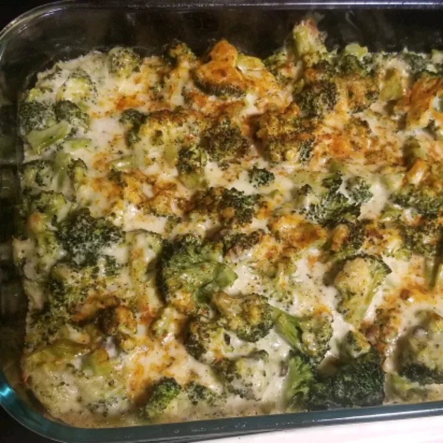

Broccoli-Cheese Casserole

Description
My mom made this broccoli cheese casserole every Thanksgiving when I was little. We kids could never get enough! If you have children or have some coming to visit you as guests this Thanksgiving, I guarantee that they will eat (and enjoy) this veggie dish. It's also fabulous with a Christmas ham.
Ingredients (makes 8 servings)
- 1 10.5oz can Condensed Cream of Mushroom soup
- 1 cup mayonnaise
- 1 egg, beaten
- 1/4 cup chopped onion
- 3 10oz packages frozen chopped broccoli
- 8oz shredded sharp Cheddar cheese
- Salt and pepper to taste
- 1 dash paprika
Directions
- Preheat the oven to 350 degrees F (175 degrees C). Butter a 9"x13" baking dish.
- Whisk condensed soup, mayonnaise, egg, and onions together in a medium mixing bowl until combined.
- Place frozen broccoli into a very large mixing bowl and break it up if necessary; add soup mixture and mix well to coat. Sprinkle with cheese and mix well; spread mixture into the prepared baking dish. Season with salt, pepper, and paprika.
- Bake in the preheated oven for 45 minutes to 1 hour.